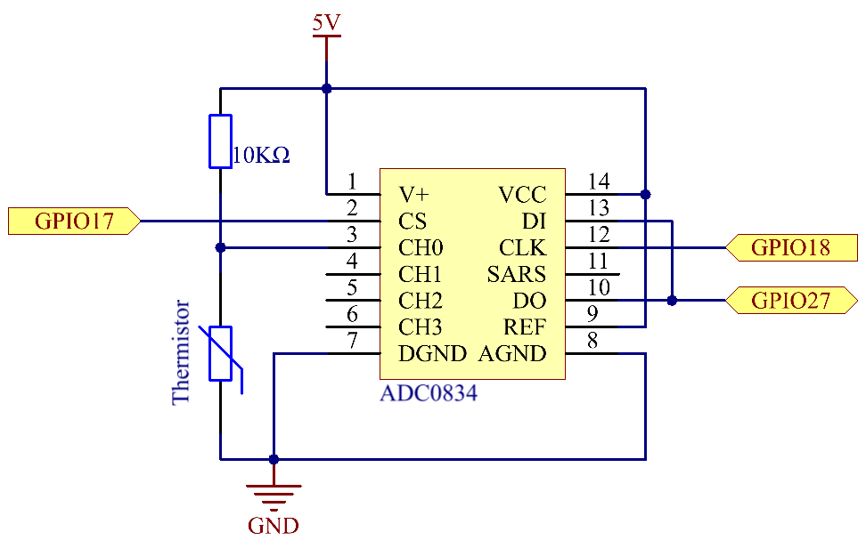
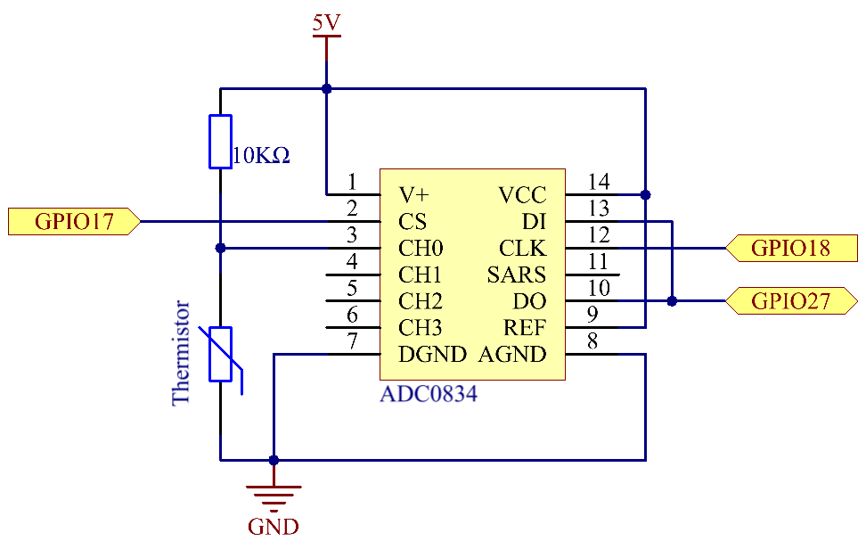

Nota
Ciao, benvenuto nella community su Facebook degli appassionati di SunFounder Raspberry Pi, Arduino e ESP32! Approfondisci il mondo di Raspberry Pi, Arduino ed ESP32 insieme a altri appassionati.
Perché unirsi?
Supporto esperto: Risolvi problemi post-vendita e sfide tecniche con l’aiuto della nostra community e del nostro team.
Impara e condividi: Scambia consigli e tutorial per migliorare le tue competenze.
Anteprime esclusive: Ottieni accesso anticipato a nuovi annunci di prodotti e anteprime.
Sconti speciali: Approfitta di sconti esclusivi sui nostri prodotti più recenti.
Promozioni festive e omaggi: Partecipa a promozioni e omaggi durante le festività.
üëâ Pronto per esplorare e creare con noi? Clicca su [Qui] e unisciti oggi stesso!
2.2.2 Termistore
Introduzione
Come il fotoresistore è sensibile alla luce, il termistore è un dispositivo elettronico sensibile alla temperatura, che può essere utilizzato per realizzare funzioni di controllo della temperatura, come un allarme di calore.
Componenti

Principio
Un termistore è una resistenza termicamente sensibile che presenta un cambiamento preciso e prevedibile nella resistenza proporzionale a piccole variazioni di temperatura. La sua variazione di resistenza dipende dalla sua composizione unica. I termistori appartengono al gruppo dei componenti passivi. A differenza dei loro omologhi attivi, i dispositivi passivi non possono fornire guadagno di potenza o amplificazione a un circuito.
Esistono due tipi di termistori: coefficiente di temperatura negativo (NTC) e coefficiente di temperatura positivo (PTC), noti anche come NTC e PTC. La resistenza di un termistore PTC aumenta con la temperatura, mentre per l’NTC è il contrario. In questo esperimento utilizziamo un termistore NTC.

Il principio è che la resistenza del termistore NTC varia con la temperatura dell’ambiente esterno. Quando la temperatura aumenta, la resistenza del termistore diminuisce. I dati di tensione vengono poi convertiti in valori digitali tramite l’adattatore A/D, e la temperatura in gradi Celsius o Fahrenheit viene mostrata tramite programmazione.
In questo esperimento, si utilizza un termistore e una resistenza di pull-up da 10k. Ogni termistore ha una resistenza normale, qui pari a 10k ohm, misurata a 25 gradi Celsius.
La relazione tra resistenza e temperatura è la seguente:
RT =RN expB(1/TK – 1/TN)
RT è la resistenza del termistore NTC alla temperatura TK.
RN è la resistenza del termistore NTC alla temperatura nominale TN. Qui, il valore numerico di RN è 10k.
TK è una temperatura Kelvin e l’unità è K. Qui, il valore numerico di TKè 273,15 + gradi Celsius.
TN è una temperatura Kelvin nominale; anche l’unità è K. Qui, il valore numerico di TN è 273,15+25.
B (beta), la costante di materiale del termistore NTC, è chiamata anche indice di sensibilità termica e ha un valore numerico di 3950.
exp è l’abbreviazione di esponenziale, e la base è il numero naturale e, che è approssimativamente uguale a 2,7.
Converti questa formula TK=1/(ln(RT/RN)/B+1/TN) per ottenere la temperatura Kelvin e sottraendo 273,15 ottieni la temperatura in gradi Celsius.
Questa relazione è una formula empirica, accurata solo quando la temperatura e la resistenza sono entro il range efficace.
Schema elettrico
 

Procedure sperimentali
Passo 1: Costruisci il circuito.

Per gli Utenti del Linguaggio C
Passo 2: Vai alla cartella del codice.
cd ~/davinci-kit-for-raspberry-pi/c/2.2.2/
Passo 3: Compila il codice.
gcc 2.2.2_Thermistor.c -lwiringPi -lm
Nota
-lm serve per caricare la libreria matematica. Non ometterlo, altrimenti comparirà un errore.
Passo 4: Esegui il file eseguibile.
sudo ./a.out
Con il codice in esecuzione, il termistore rileva la temperatura ambientale che verrà visualizzata sullo schermo una volta completato il calcolo.
Nota
Se il programma non funziona dopo l’esecuzione, o compare un errore del tipo: "wiringPi.h: Nessun file o directory", consulta Il codice C non funziona?.
Codice
#include <wiringPi.h>
#include <stdio.h>
#include <math.h>
typedef unsigned char uchar;
typedef unsigned int uint;
#define ADC_CS 0
#define ADC_CLK 1
#define ADC_DIO 2
uchar get_ADC_Result(uint channel)
{
uchar i;
uchar dat1=0, dat2=0;
int sel = channel > 1 & 1;
int odd = channel & 1;
digitalWrite(ADC_CLK, 1);
delayMicroseconds(2);
digitalWrite(ADC_CLK, 0);
delayMicroseconds(2);
pinMode(ADC_DIO, OUTPUT);
digitalWrite(ADC_CS, 0);
// Bit di avvio
digitalWrite(ADC_CLK,0);
digitalWrite(ADC_DIO,1); delayMicroseconds(2);
digitalWrite(ADC_CLK,1); delayMicroseconds(2);
// Modalità single-end
digitalWrite(ADC_CLK,0);
digitalWrite(ADC_DIO,1); delayMicroseconds(2);
digitalWrite(ADC_CLK,1); delayMicroseconds(2);
// ODD
digitalWrite(ADC_CLK,0);
digitalWrite(ADC_DIO,odd); delayMicroseconds(2);
digitalWrite(ADC_CLK,1); delayMicroseconds(2);
// Selezione
digitalWrite(ADC_CLK,0);
digitalWrite(ADC_DIO,sel); delayMicroseconds(2);
digitalWrite(ADC_CLK,1);
digitalWrite(ADC_DIO,1); delayMicroseconds(2);
digitalWrite(ADC_CLK,0);
digitalWrite(ADC_DIO,1); delayMicroseconds(2);
for(i=0;i<8;i++)
{
digitalWrite(ADC_CLK,1); delayMicroseconds(2);
digitalWrite(ADC_CLK,0); delayMicroseconds(2);
pinMode(ADC_DIO, INPUT);
dat1=dat1<<1 | digitalRead(ADC_DIO);
}
for(i=0;i<8;i++)
{
dat2 = dat2 | ((uchar)(digitalRead(ADC_DIO))<<i);
digitalWrite(ADC_CLK,1); delayMicroseconds(2);
digitalWrite(ADC_CLK,0); delayMicroseconds(2);
}
digitalWrite(ADC_CS,1);
pinMode(ADC_DIO, OUTPUT);
return(dat1==dat2) ? dat1 : 0;
}
int main(void)
{
unsigned char analogVal;
double Vr, Rt, temp, cel, Fah;
if(wiringPiSetup() == -1){ // se l'inizializzazione di wiring fallisce, stampa un messaggio a schermo
printf("setup wiringPi failed !");
return 1;
}
pinMode(ADC_CS, OUTPUT);
pinMode(ADC_CLK, OUTPUT);
while(1){
analogVal = get_ADC_Result(0);
Vr = 5 * (double)(analogVal) / 255;
Rt = 10000 * (double)(Vr) / (5 - (double)(Vr));
temp = 1 / (((log(Rt/10000)) / 3950)+(1 / (273.15 + 25)));
cel = temp - 273.15;
Fah = cel * 1.8 +32;
printf("Celsius: %.2f C Fahrenheit: %.2f F\n", cel, Fah);
delay(100);
}
return 0;
}
Spiegazione del Codice
#include <math.h>
Questa è una libreria numerica di C che dichiara una serie di funzioni per calcolare operazioni matematiche e trasformazioni comuni.
analogVal = get_ADC_Result(0);
Questa funzione viene utilizzata per leggere il valore del termistore.
Vr = 5 * (double)(analogVal) / 255;
Rt = 10000 * (double)(Vr) / (5 - (double)(Vr));
temp = 1 / (((log(Rt/10000)) / 3950)+(1 / (273.15 + 25)));
cel = temp - 273.15;
Fah = cel * 1.8 +32;
printf("Celsius: %.2f C Fahrenheit: %.2f F\n", cel, Fah);
Questi calcoli convertono i valori del termistore in gradi Celsius.
Vr = 5 * (double)(analogVal) / 255;
Rt = 10000 * (double)(Vr) / (5 - (double)(Vr));
Queste due righe di codice calcolano la distribuzione della tensione con il valore letto da analog per ottenere Rt (resistenza del termistore).
temp = 1 / (((log(Rt/10000)) / 3950)+(1 / (273.15 + 25)));
Questo codice si riferisce alla sostituzione di Rt nella formula TK=1/(ln(RT/RN)/B+1/TN) per ottenere la temperatura in Kelvin.
temp = temp - 273.15;
Converte la temperatura in Kelvin in gradi Celsius.
Fah = cel * 1.8 +32;
Converte i gradi Celsius in Fahrenheit.
printf("Celsius: %.2f C Fahrenheit: %.2f F\n", cel, Fah);
Stampa i gradi centigradi, i gradi Fahrenheit e le loro unità sul display.
Per gli Utenti di Linguaggio Python
Passo 2: Vai alla cartella del codice.
cd ~/davinci-kit-for-raspberry-pi/python/
Passo 3: Esegui il file eseguibile
sudo python3 2.2.2_Thermistor.py
Una volta eseguito il codice, il termistore rileverà la temperatura ambientale che verrà stampata sullo schermo al termine del calcolo del programma.
Codice
Nota
Puoi Modificare/Reimpostare/Copiare/Eseguire/Interrompere il codice qui sotto. Prima di fare ciò, però, devi accedere al percorso del codice sorgente come davinci-kit-for-raspberry-pi/python.
import RPi.GPIO as GPIO
import ADC0834
import time
import math
def init():
ADC0834.setup()
def loop():
while True:
analogVal = ADC0834.getResult()
Vr = 5 * float(analogVal) / 255
Rt = 10000 * Vr / (5 - Vr)
temp = 1/(((math.log(Rt / 10000)) / 3950) + (1 / (273.15+25)))
Cel = temp - 273.15
Fah = Cel * 1.8 + 32
print ('Celsius: %.2f C Fahrenheit: %.2f F' % (Cel, Fah))
time.sleep(0.2)
if __name__ == '__main__':
init()
try:
loop()
except KeyboardInterrupt:
ADC0834.destroy()
Spiegazione del Codice
import math
Una libreria numerica che dichiara una serie di funzioni per calcolare operazioni matematiche comuni e trasformazioni.
analogVal = ADC0834.getResult()
Questa funzione viene utilizzata per leggere il valore del termistore.
Vr = 5 * float(analogVal) / 255
Rt = 10000 * Vr / (5 - Vr)
temp = 1/(((math.log(Rt / 10000)) / 3950) + (1 / (273.15+25)))
Cel = temp - 273.15
Fah = Cel * 1.8 + 32
print ('Celsius: %.2f °C Fahrenheit: %.2f ℉' % (Cel, Fah))
Questi calcoli convertono i valori del termistore in gradi Celsius e Fahrenheit.
Vr = 5 * float(analogVal) / 255
Rt = 10000 * Vr / (5 - Vr)
Queste due righe di codice calcolano la distribuzione della tensione con il valore letto da analog per ottenere Rt (resistenza del termistore).
temp = 1/(((math.log(Rt / 10000)) / 3950) + (1 / (273.15+25)))
Questo codice inserisce Rt nella formula TK=1/(ln(RT/RN)/B+1/TN) per ottenere la temperatura in Kelvin.
temp = temp - 273.15
Converte la temperatura in Kelvin in gradi Celsius.
Fah = Cel * 1.8 + 32
Converte i gradi Celsius in gradi Fahrenheit.
print ('Celsius: %.2f °C Fahrenheit: %.2f ℉' % (Cel, Fah))
Stampa i gradi Celsius e Fahrenheit con le relative unità sul display.
Immagine del Fenomeno